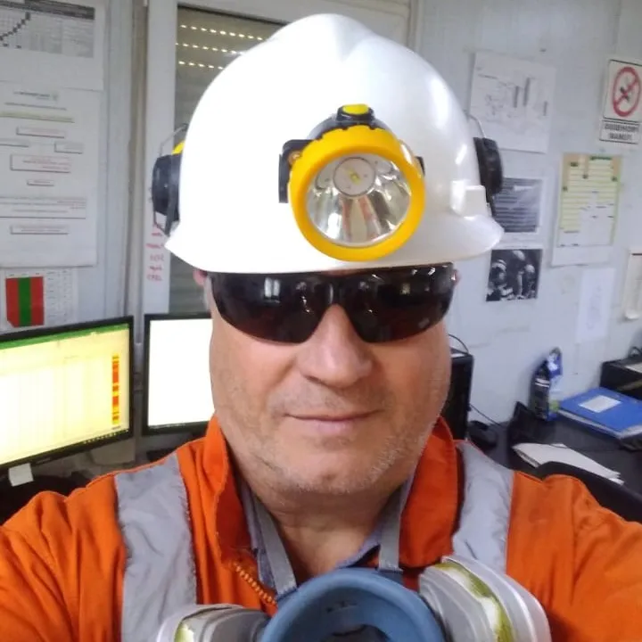

Técnico en el área de minería y construcción.
José Luis ha participado en distintas empresas desde la prospección hasta la producción minera. Ha realizado cursos de especialización enfocados en minería, seguridad, medio ambiente, y software aplicados, con más de 25 años de experiencia en el sector. A lo largo de su experiencia dentro de la actividad, ha realizado trabajos orientados en el área legal y técnica, dentro de los cuales destacan, solicitud y seguimiento de propiedades mineras en distintas provincias de Argentina; planificación y ejecución de campañas para prospección; proyecto, evaluación y construcción de campamentos temporales; diseño y supervisión en la ejecución de huellas mineras; prospección y exploración en distintos ambientes en Argentina y Chile; control de sondajes, muestreos geoquímicos y metalúrgicos, base de datos (ejecución y análisis); y supervisión Senior en el área Ore Control en distintos métodos de explotación subterráneo y a cielo abierto (UG sublevel caving, sublevel stoping) habiendo participado en esta etapa en Mina Gualcamayo.